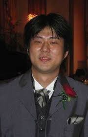

Father of One Piece
The author of the famous 'One Piece' called Oda Eiichiro. Oda Eiichiro is born on January 1st 1975 in Kumamoto, Japan. Since he was young, he loved anime and manga a lot. When he was four years old, he get an idea of becoming a manga artist in the future to avoid get a job and with this idea, his life began to have a deep connection wtih Japanese manga. With the interest in pirate, he sets a goal to draw and release a pirate manga. When he was 17 years old, he submitted his first manga 'Wanted!' which is the predecessor of 'One Piece'. Finally in 1997, the first 'One Piece' was published and become a series in later time. From then, Oda Eiichiro kept writing his 'One Piece' and also become one of the most famous manga artist not only in Japan but also among the whole world.